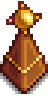

Mini-Obelisk
| Mini-Obelisk | |
|  | |
| Place two on the farm to warp between them. | |
| Information | |
| Source | Crafting |
| Sell Price | Cannot be sold |
| Crafting | |
| Recipe Source | "A Curious Substance" special order |
| Ingredients | |
| Produces | One Mini-Obelisk per craft |
A Mini-Obelisk is a crafted item that can be placed anywhere within the boundaries of the farm in Stardew Valley (not Ginger Island). Two of them are used as a pair to teleport the player from one to the other.
The crafting recipe is obtained after completing the Wizard's special order quest "A Curious Substance".
Limitations
- Placing a third Mini-Obelisk on the farm will trigger the error message "You can only place two".
- Placing a Mini-Obelisk outside the farm will trigger the error message "Can only be placed on the Farm". This includes the inside of buildings, e.g., the farmhouse and sheds.
- Placing a single Mini-Obelisk on the farm is permitted, but no transportation is enabled without a second one.
- The Mini-Obelisk cannot be used to transport the horse. The player cannot interact with the Mini-Obelisk while riding the horse.
- The Mini-Obelisk will not function on Ginger Island.
History
- 1.5: Introduced.